中国人民抗日战争暨世界反法西斯战争胜利80周年纪念大会举行
9月3日上午，中共中央、全国人大常委会、国务院、全国政协、中央军委在北京天安门广场隆重举行纪念大会，包括阅兵式环节。习近平总书记发表重要讲话，回顾抗战历史、缅怀先烈，重申珍爱和平的坚定立场。纪念大会庄严隆重，全面展现了中国人民抗日战争在世界反法西斯战争中的重要作用，彰显了中华民族不屈不挠的抗战精神。
阅读更多
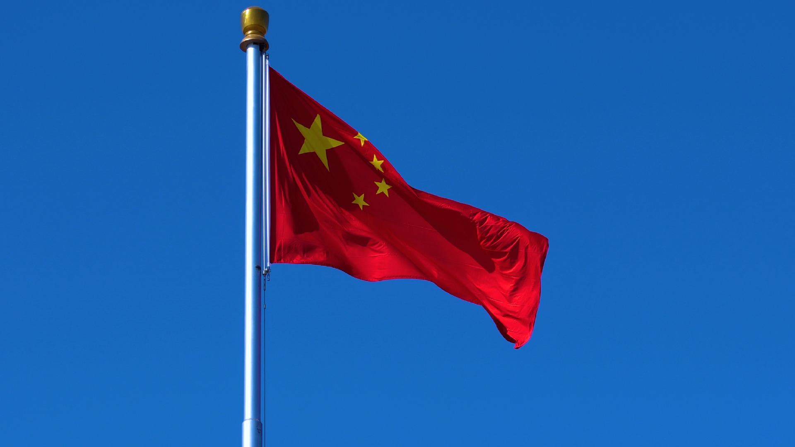
9月3日上午，中共中央、全国人大常委会、国务院、全国政协、中央军委在北京天安门广场隆重举行纪念大会，包括阅兵式环节。习近平总书记发表重要讲话，回顾抗战历史、缅怀先烈，重申珍爱和平的坚定立场。纪念大会庄严隆重，全面展现了中国人民抗日战争在世界反法西斯战争中的重要作用，彰显了中华民族不屈不挠的抗战精神。
以中共中央、国务院、中央军委名义，为健在的抗战老战士、老同志、抗战将领或其遗属颁发"中国人民抗日战争胜利80周年"纪念章。各地退役军人事务部门同步开展上门慰问、义诊服务等关爱行动，表达对抗战英雄的崇高敬意和深切关怀，让英雄精神代代相传。
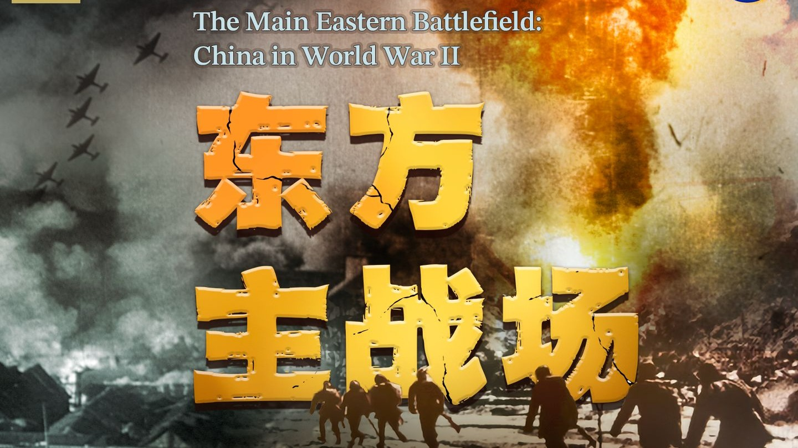
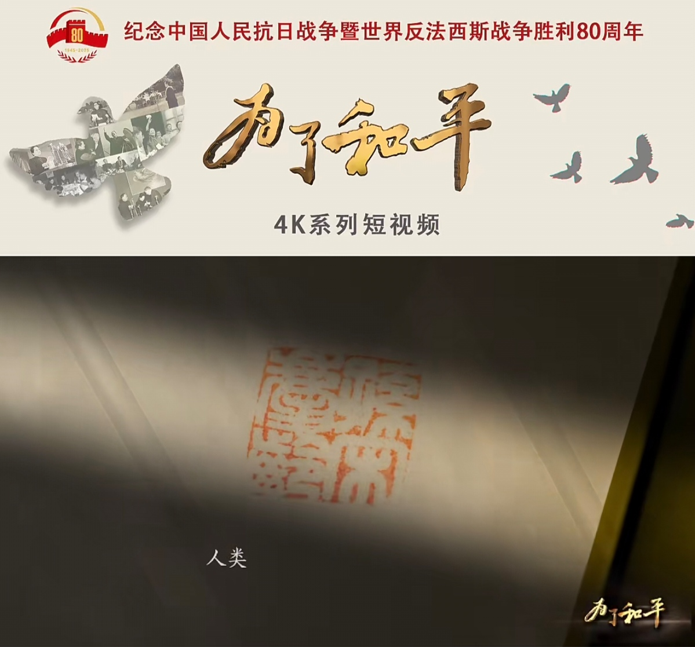
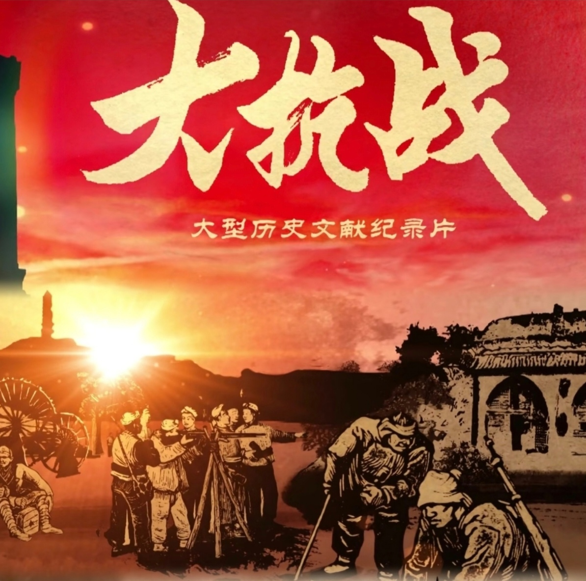
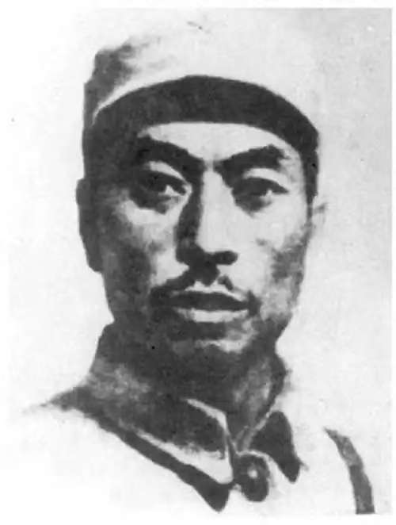
东北抗日联军
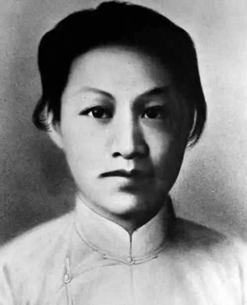
东北抗日联军
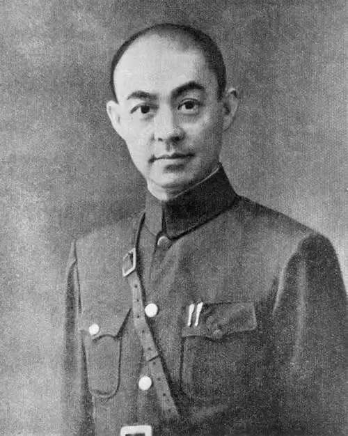
国民革命军第33集团军
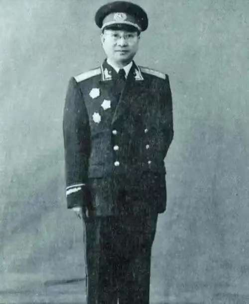
八路军副总司令，百团大战指挥官
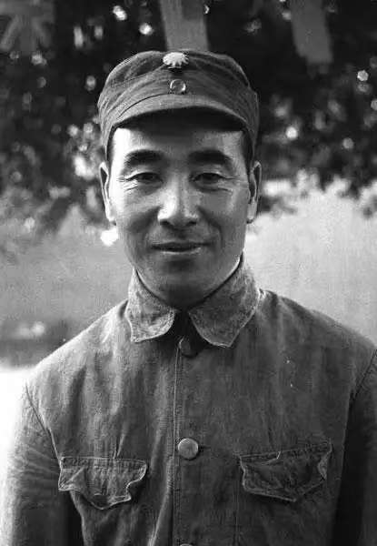
八路军第115师师长，平型关大捷指挥官
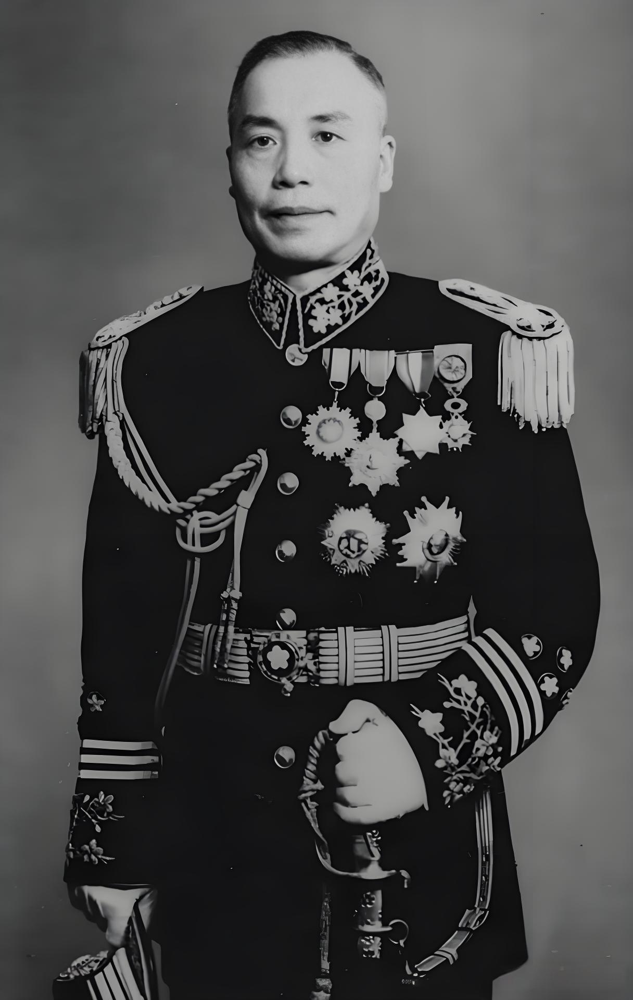
国民革命军第五战区司令长官，台儿庄战役指挥官
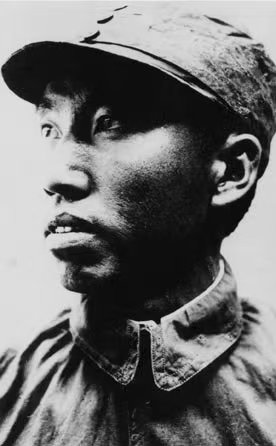
八路军副参谋长，敌后抗战重要将领
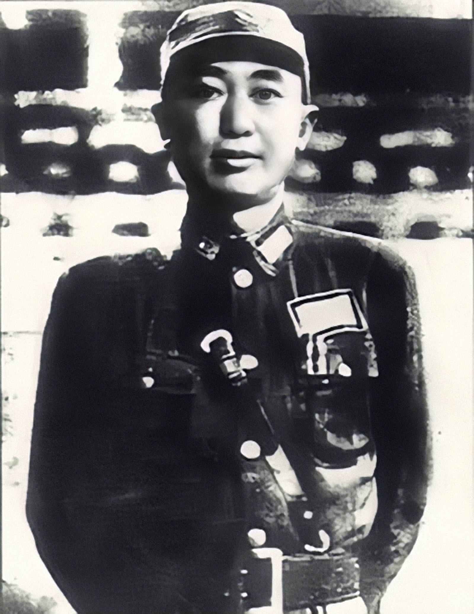
国民革命军第200师师长，中国远征军名将
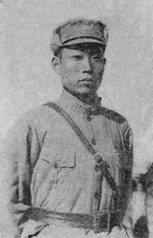
国民革命军第29军副军长，七七事变殉国将领
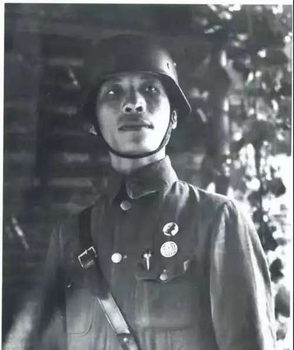
国民革命军第88师524团团长，四行仓库保卫战指挥官
杨靖宇原名马尚德，是东北抗日联军第一路军总司令兼政委，他将毕生精力献给了东北抗日游击战争，用生命诠释了民族气节。1927年加入中国共产党后，他先后在河南、东北等地开展革命工作，1932年起以"杨靖宇"为化名，整合磐石游击队等抗日力量，在长白山麓建立起广阔的抗日游击根据地，转战千里、屡创佳绩，被日军视为"满洲治安之癌"。
1938年起，日军对东北抗联发动大规模"扫荡"，实施"归屯并户"切断抗联与群众的联系，还悬赏万元缉拿杨靖宇。在叛徒出卖密营、补给断绝的绝境中，他率领部队在零下三四十度的严寒中露宿山林，以草根、树皮甚至棉絮充饥，仍坚持与数倍于己的敌人周旋。1940年2月，孤身奋战的杨靖宇在濛江县三道崴子陷入重围，面对敌人的劝降，他以枪声回应，直至身中数弹壮烈殉国，年仅35岁。日军解剖其遗体时发现，他的胃里只有未消化的草根和棉花，无一粒粮食，这一幕让侵略者也为之震撼，承认他是"大大的英雄"。
赵一曼是东北抗日战场上杰出的女性指挥员，兼具侠骨与柔肠，牺牲时年仅31岁。九一八事变后，她受中共中央指派奔赴东北，先后在奉天、哈尔滨开展革命工作，组织领导哈尔滨电车工人大罢工，成功维护了工人权益。1934年，她转战珠河县山区，发动群众建立抗日根据地，凭借出色的军事指挥才能，带领游击队伍多次配合东北人民革命军主力作战，因挎双枪、骑白马、作战英勇，被当地群众誉为"文武双全的女指挥""密林女王"。
1935年11月，因汉奸告密，赵一曼与战士们在左撇子沟遭数倍日军包围，激战中她身负重伤不幸被俘。关押期间，日军对她施加了极其残酷的刑讯，试图逼问抗日机密，但赵一曼始终坚贞不屈、守口如瓶。1936年8月2日，在押赴刑场前，她写下致儿子宁儿的绝笔信，字里行间既有对儿子的思念与愧疚，更有对民族解放事业的坚定信念。这份藏在日军审讯档案中的遗嘱，直至1957年才被发现，成为见证英雄母亲家国情怀的珍贵史料。
张自忠是国民革命军第33集团军总司令，著名抗日民族英雄，他一生征战沙场，最终以血肉之躯践行了"为国捐躯"的誓言。全面抗战爆发后，他先后参与台儿庄战役、武汉会战等重大战役，在临沂会战中率部激战七昼夜，成功阻击日军精锐师团，为台儿庄大捷奠定基础，其勇猛作战的风格让日军闻风丧胆。
1940年5月，枣宜会战爆发，张自忠主动请缨，率领总部特务营和两个团渡河作战，深入日军腹地牵制敌军主力。在敌我兵力悬殊的情况下，他率部在南瓜店一带与日军展开殊死搏斗，面对数倍敌军的轮番进攻，坚守阵地不退半步。激战中，张自忠多处负伤，仍坚持指挥战斗，鼓励将士们"为国家民族死之决心，海不清，石不烂，决不半点改变"。最终，他在阵地被攻破后仍孤身作战，身中数弹壮烈殉国，年仅49岁。张自忠是抗战时期牺牲的职务最高的国军将领，他的牺牲极大地激励了全国军民的抗战士气，彰显了中国军人的爱国赤诚。
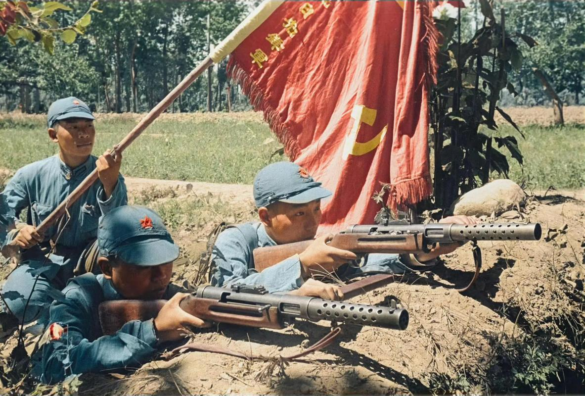
抗战时期珍贵历史照片
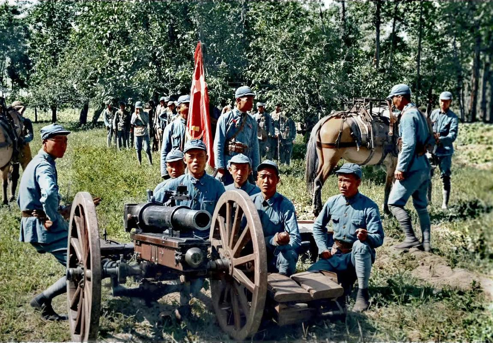
抗战时期珍贵历史照片
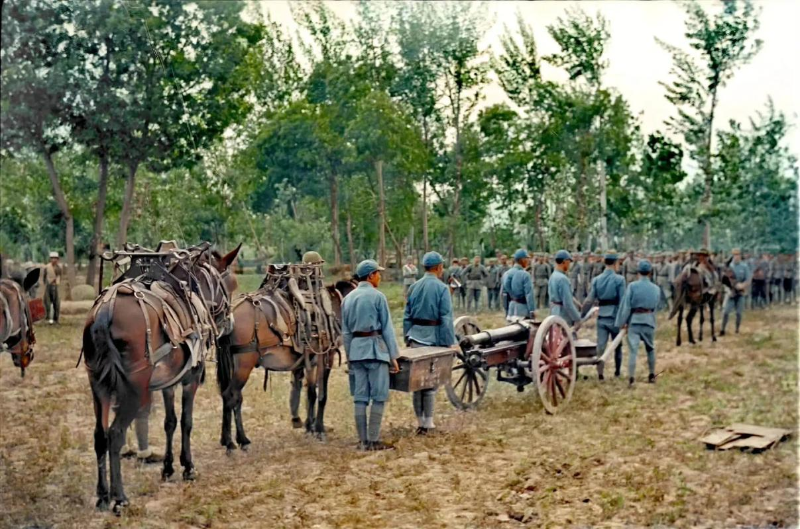
抗战时期珍贵历史照片
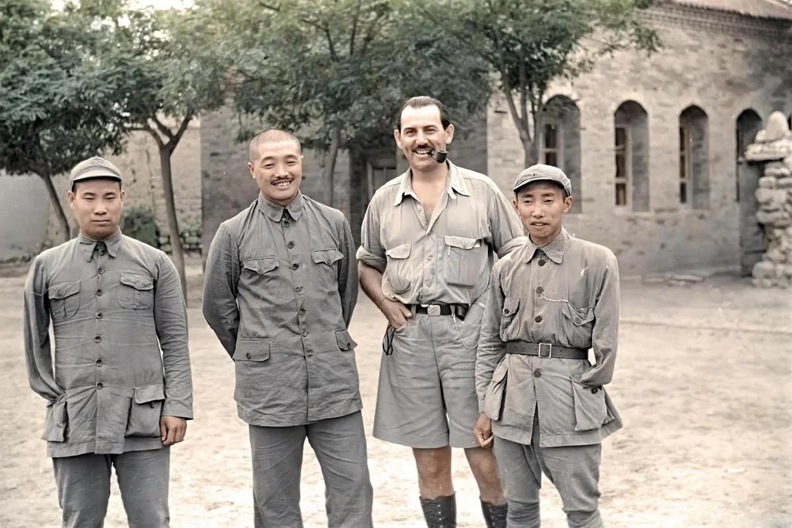
抗战时期珍贵历史照片
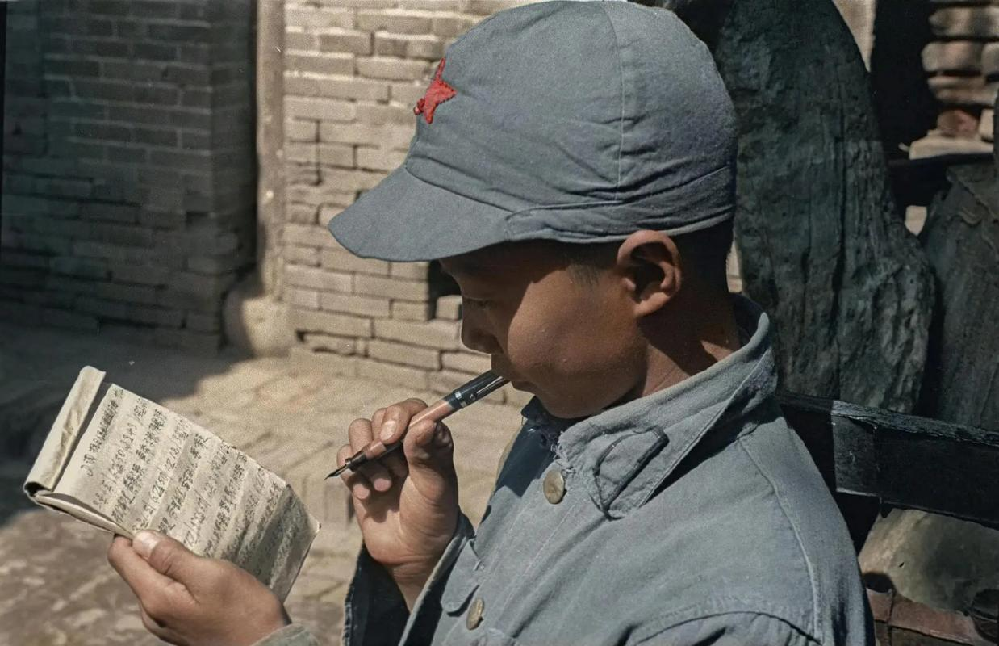
抗战时期珍贵历史照片
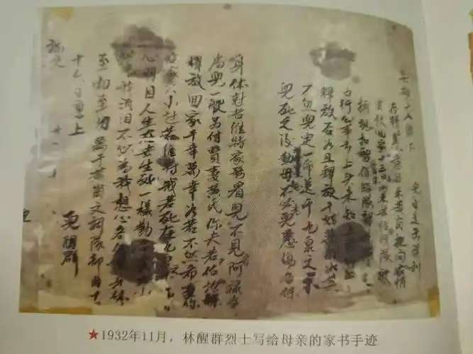
抗战时期珍贵历史照片
宁儿：
母亲对于你没有能尽到教育的责任，实在是遗憾的事情。
母亲因为坚决地做了反满抗日的斗争，今天已经到了牺牲的前夕了。
母亲和你在生前是永久没有再见的机会了。希望你，宁儿啊！赶快成人，来安慰你地下的母亲！
我最亲爱的孩子啊！母亲不用千言万语来教育你，就用实行来教育你。
在你长大成人之后，希望不要忘记你的母亲是为国而牺牲的！
你的母亲 赵一曼 于车中
志兰：
就江明同志回延安之便，再带给你几个字。
乔迁同志那批过路的人，在几天前已安全通过敌之封锁线了，很快可以到达延安，想不久你可看到我的信。
希特勒"春季攻势"作战已爆发，这将影响日寇行动及我国国内局势，国内局势将如何变迁，不久或可明朗化了。
我担心着你及北北，你入学后望能好好地恢复身体，有暇时多去看看太北，小孩子极需人照顾的。
此间一切如常，惟生活则较前艰难多了。 左权
仰之我弟如晤：
因为战区全面战争之关系，及本身之责任，均须过河与敌一拼，现已决定于今晚往襄河东岸进发。
到河东后，如能与38师、179师取得联络，即率该两师与马师，不顾一切，向北进之敌死拼。
若不能与38师、179师取得联络，即带马师之三个团，奔着我们最终之目标（死）往北迈进。
无论作好作坏，一定求良心得到安慰，以后公私均得请我弟负责。由现在起，以后或暂别，或永离，不得而知。
专此布达。 小兄张自忠手启
向抗战英烈献花，表达我们的敬意与缅怀
纪念中国人民抗日战争暨世界反法西斯战争胜利80周年阅兵式
纪念中国人民抗日战争暨世界反法西斯战争胜利75周年座谈会
纪念中国人民抗日战争暨世界反法西斯战争胜利70周年大会
纪念中国人民抗日战争暨世界反法西斯战争胜利60周年大会
专业解说
九三阅兵式深度解读
重庆晨报 | 2025-09-05
本次阅兵式展示了我国国防和军队建设的最新成就，体现了维护世界和平的坚定决心。 受阅部队中不仅有陆海空火箭军等多军兵种力量，还加入了战略支援、联勤保障等新型力量， 展现了我军体系化、信息化作战能力不断提升。阅兵式中的装备，如隐形战机、 新一代主战坦克、远程防空系统，也代表着我国国防科技的前沿水平。 阅兵不仅是一场视觉震撼，更是对历史的铭记和对未来的宣示—— 和平需要力量守护，但力量永远指向和平。
查看详情
阅兵式背后的故事
搜狐新闻 | 2025-09-04
无论是整齐划一的步伐，还是铿锵有力的口号，背后都凝聚着官兵们数月甚至更久的训练。 为了在阅兵场上呈现最完美的一刻，每名参训官兵严格执行高强度训练计划， 在高温下坚持站军姿、练齐步、举枪姿势稳定数小时。 一位参训战士说："阅兵不是为了展示自己，而是为了向先辈致敬。" 每一次踏响长安街的脚步， 都是向牺牲的英雄诉说：我们正在守护你们用生命换来的和平。
查看详情
抗战精神的时代价值与传承
光明日报 | 2025-08-20
抗战精神的核心，是天下兴亡、匹夫有责的爱国信念，是不畏强暴、血战到底的英雄气概， 是百折不挠、坚韧不拔的民族意志。今天，我们依然需要这种精神。 在新的时代背景下，它激励我们在科技创新、国防建设与国家发展中， 勇攀高峰、砥砺前行。无数青年以实际行动证明： 抗战英雄未竟事业，我们必将继续！
查看详情
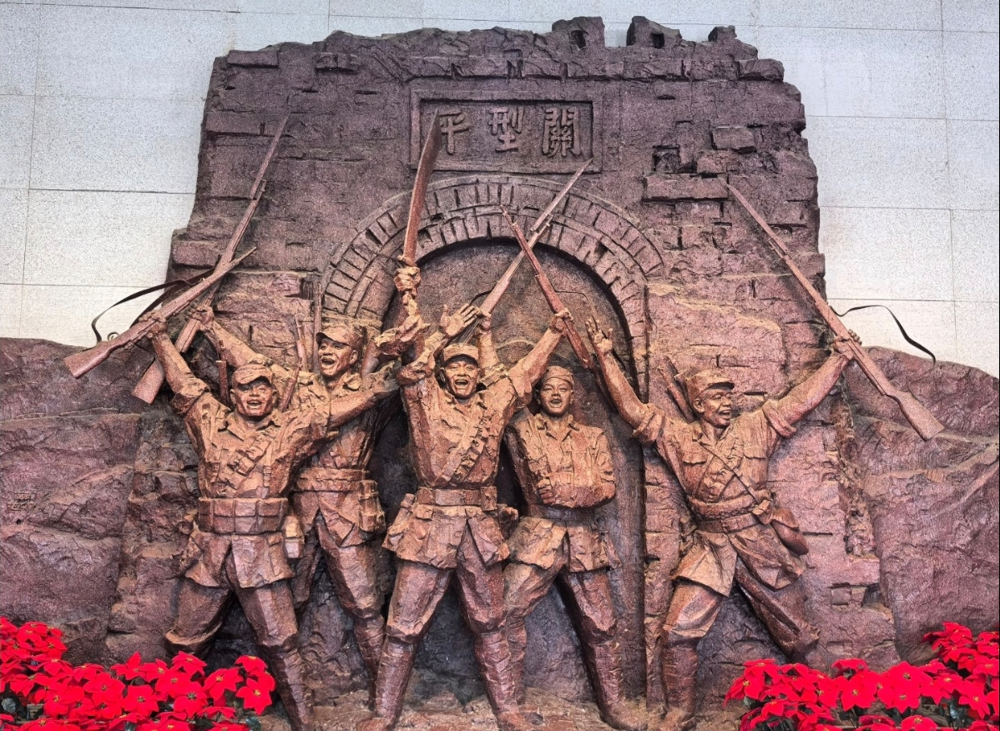
平型关大捷
1937年9月25日
主要概括
平型关大捷发生于1937年9月25日，是全面抗战爆发后中国军队取得的首次重大胜利。战役由八路军第115师师长林彪、副师长聂荣臻指挥，参战部队在山西省大同市灵丘县平型关附近，依托险峻地形设伏，对日军精锐第5师团第21旅团一部及辎重车队发起突袭。战斗中，八路军官兵奋勇拼杀，经过近一天的激战，成功歼灭日军千余人，击毁汽车百余辆、马车200余辆，缴获大量武器弹药、军用物资及地图、文件等重要资料，有效阻滞了日军西进的攻势。
历史意义
打破了"日军不可战胜"的神话，极大振奋了全国军民的抗战士气，扭转了抗战初期的悲观情绪，让全国人民看到了战胜日本侵略者的希望。彰显了中国共产党领导的八路军的战斗力，提高了中国共产党和八路军在全国的政治声望与影响力，为后续抗日民族统一战线的巩固与发展奠定了重要基础。有力配合了正面战场的防御作战，牵制了日军兵力，减轻了国民党军队在平型关一线的防守压力，推动了全国抗战局面的发展。
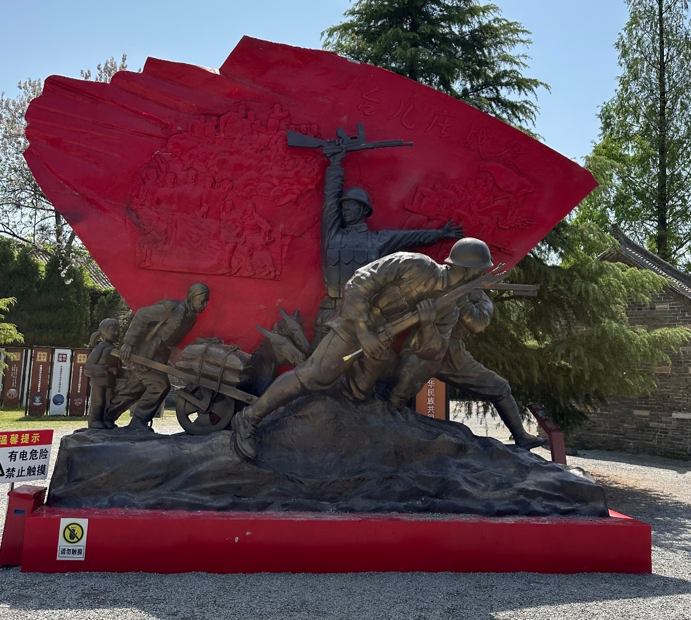
台儿庄战役
1938年3月-4月
主要概括
台儿庄战役是1938年3月至4月期间，中国军队在山东省枣庄市台儿庄及其周边地区进行的大规模会战，是抗战以来正面战场取得的最大胜利。战役由第五战区司令长官李宗仁统一指挥，参战部队包括国民党军第20军团、第2集团军等主力部队，总兵力约29万人。战役分为阻击牵制和全线反击两个阶段，中国军队先在临沂、滕县等地顽强阻击日军进攻，为台儿庄主战场部署争取时间；随后对进攻台儿庄的日军第5师团、第10师团一部发起围歼，经过激烈巷战、拉锯战，最终歼灭日军约2万余人，缴获大量武器装备，收复台儿庄等战略要地。
历史意义
沉重打击了日本侵略者的嚣张气焰，打破了日军"速战速决"灭亡中国的战略企图，延缓了日军的进攻步伐。坚定了全国军民坚持抗战的信心与决心，凝聚了全民族的抗战意志，激发了各地民众支援抗战的热情，形成了全民抗战的浓厚氛围。提升了中国在国际上的地位与影响力，让国际社会看到了中国军队的战斗力和中国人民抗战的决心，为后续争取国际援助与支持创造了有利条件。
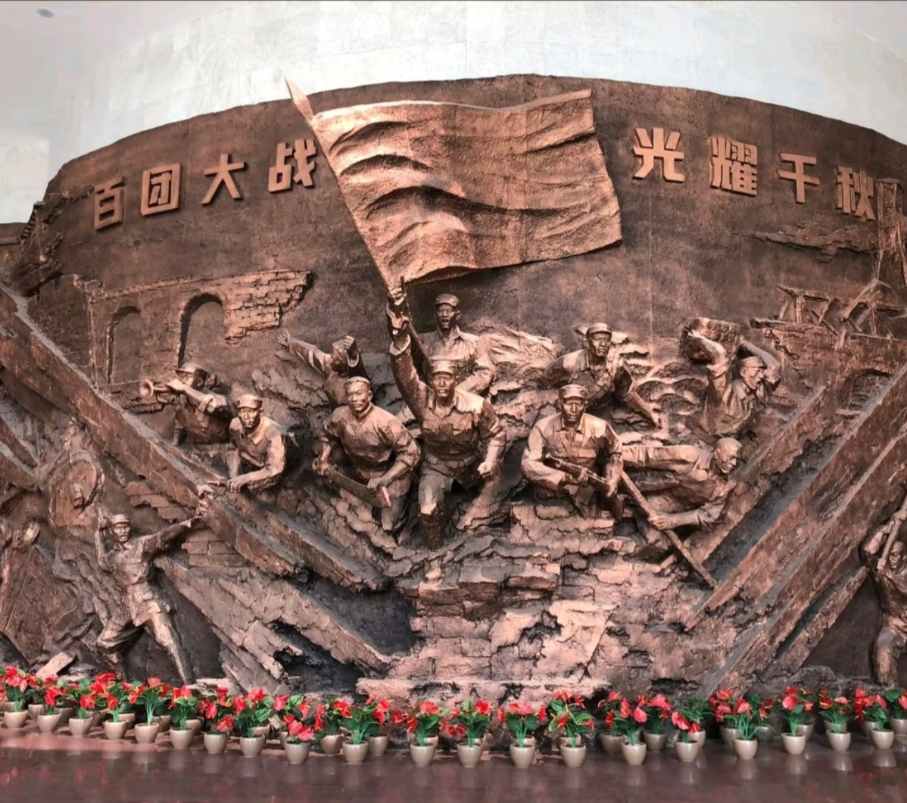
百团大战
1940年8月-12月
主要概括
百团大战爆发于1940年8月至12月，是八路军在华北敌后发动的一次大规模进攻和反"扫荡"战役，因参战部队达105个团，故称"百团大战"。战役由彭德怀副总司令统一指挥，主要战场覆盖华北广大地区的铁路、公路交通线及敌伪据点。战役分为三个阶段：第一阶段以破坏日军交通线、摧毁敌伪据点为核心，重点破袭正太铁路；第二阶段继续扩大战果，进攻交通线两侧及根据地内的敌伪据点；第三阶段主要应对日军的疯狂报复性"扫荡"，展开艰苦的反"扫荡"作战。整个战役共进行大小战斗1800余次，歼灭日伪军4万余人，破坏铁路470余公里、公路1500余公里，摧毁敌伪据点2900余个，沉重打击了华北日军的统治。
历史意义
有力打击了日军在华北的"囚笼政策"，打破了日军对华北抗日根据地的封锁与压迫，巩固了华北敌后抗日根据地。牵制了大量日军兵力，缓解了正面战场的作战压力，支援了国民党军队的抗战，配合了全国抗战的整体部署。振奋了全国军民的抗战信心，展现了中国共产党领导的敌后抗日根据地的强大力量，进一步扩大了中国共产党和八路军的国际声誉，为抗战胜利奠定了坚实的基础。